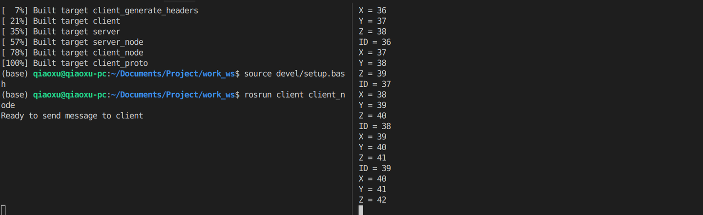

最近在折腾ROS两个节点之间的通信实现，每个的功能都很简单，需要解决的地方在于两个之间的通信量很大，延迟要很低才行。确定使用protobuf共享内存后，网上查阅了好多资料才最终实现。在这实现一个最小的demo作为记录，希望能对后来者有帮助！ github链接
1. protobuf 与共享内存
关于二者的概念，网上资料很多，在这最基本的说明下。ROS中传统的通信方式是socket实现，通过订阅和发布信息实现通信，另外服务和参数服务器因为暂未涉及在这不进行比较。这种方式虽然延时也很低但当数据量比较大，对传输稳定性要求高或者更高传输速率时，便显得不那么合适了。
共享内存指的是通过对一块固定内存进行映射，使得不同程序或线程可以异步访问。通过这种数据拷贝的方式实现通信，速率和稳定性上有极大的提升。另外介绍下protobuf，可以简单理解为一种数据封装通信协议，可以实现不同语言之间的数据通信，而且可以离线更改和扩展，具体请查阅资料。
protohuf安装 proto文件编写
2. 实现细节
下面通过client和server两个节点之间最简单通信，来比较详细的说明protobuf与共享内存结合实现通信的过程。
2.1 创建工程
创建ros工作空间，并创建server和client两个节点
1 2 3 4 5 6 7 8 mkdir work_ws cd work_ws & mkdir src catkin_init_workspace cd .. catkin_make cd src catkin_create_pkg server roscpp catkin create_pkg client roscpp
下面分别在两个节点下创建文件，最后创建完结构如下：
1 2 3 4 5 6 7 8 9 10 11 12 13 14 15 16 17 18 19 20 21 22 src ├── client │ ├── CMakeLists.txt │ ├── include │ │ └── client │ │ ├── client.cc │ │ └── client.h │ ├── package.xml │ ├── proto │ │ └── agreement.proto │ └── src │ └── client_node.cc ├── CMakeLists.txt └── server ├── CMakeLists.txt ├── include │ └── server │ ├── server.cc │ └── server.h ├── package.xml └── src └── server_node.cc
2.2 proto文件编写
在client节点中单独创建一个proto文件夹，用于存放proto文件。关于其具体语法请自行查阅，在这使用protobuf3版本，与版本2相比有些许不同。程序为一个最简单的message信息
1 2 3 4 5 6 7 8 9 10 syntax = "proto3" ; message agreement { double id = 1 ; double x = 2 ; double y = 3 ; double z = 4 ; bool flag = 5 ; }
下面是最复杂的地方，也就是CMakeLists.txt文件的编写，网上资料很少，在这给出一个参考链接 。可以结合我工程中的代码仔细理解下(我也不是很理解。。。)
1 2 3 4 5 6 7 8 9 10 11 12 13 14 15 16 17 18 19 20 21 22 23 24 25 26 27 28 29 30 31 32 33 34 35 36 37 38 39 40 41 42 43 44 45 46 47 48 49 50 51 52 53 54 55 56 57 58 59 60 61 62 63 64 65 66 67 68 69 70 71 72 73 74 75 76 77 78 79 80 81 82 83 84 85 86 87 88 89 90 91 92 93 cmake_minimum_required (VERSION 2.8 .3 )project (client)find_package (catkin REQUIRED COMPONENTS roscpp ) list (APPEND CMAKE_MODULE_PATH ${PROJECT_SOURCE_DIR} /cmake)include (FindProtobuf)find_package (Protobuf REQUIRED)set (proto_dir ${PROJECT_SOURCE_DIR} /proto)file (GLOB proto_files "${proto_dir}/*.proto" )catkin_destinations() set (proto_gen_dir ${CATKIN_DEVEL_PREFIX} /${CATKIN_GLOBAL_INCLUDE_DESTINATION} /proto)set (proto_gen_cpp_dir ${proto_gen_dir} )file (MAKE_DIRECTORY ${proto_gen_dir} )file (MAKE_DIRECTORY ${proto_gen_cpp_dir} )set (protogen_include_dirs ${proto_gen_cpp_dir} /../ ${proto_gen_python_dir} )set (proto_gen_cpp_files "" )foreach (proto_file ${proto_files} ) get_filename_component (proto_name ${proto_file} NAME_WE) list (APPEND proto_gen_cpp_files ${proto_gen_cpp_dir} /${proto_name} .pb.h ${proto_gen_cpp_dir} /${proto_name} .pb.cc ) endforeach (proto_file ${proto_files} ) add_custom_command ( OUTPUT ${proto_gen_cpp_files} COMMAND ${PROTOBUF_PROTOC_EXECUTABLE} --proto_path=${proto_dir} --cpp_out=${proto_gen_cpp_dir} ${proto_files} DEPENDS ${PROTOBUF_PROTOC_EXECUTABLE} ${proto_files} WORKING_DIRECTORY ${CMAKE_CURRENT_SOURCE_DIR} ) set_source_files_properties (${proto_gen_cpp_files} PROPERTIES GENERATED TRUE )add_custom_target (${PROJECT_NAME} _generate_headers DEPENDS ${proto_gen_cpp_files} ) include_directories (${PROTOBUF_INCLUDE_DIR} ${PROTOBUF_INCLUDE_DIR} /../../)add_library (${PROJECT_NAME} _proto ${proto_gen_cpp_files} )target_link_libraries (${PROJECT_NAME} _proto ${PROTOBUF_LIBRARY} )add_dependencies (${PROJECT_NAME} _proto ${PROJECT_NAME} _generate_headers)catkin_package( INCLUDE_DIRS ${protogen_include_dirs} LIBRARIES ${PROJECT_NAME} _proto ) install (TARGETS ${PROJECT_NAME} _proto ARCHIVE DESTINATION ${CATKIN_PACKAGE_LIB_DESTINATION} LIBRARY DESTINATION ${CATKIN_PACKAGE_LIB_DESTINATION} RUNTIME DESTINATION ${CATKIN_PACKAGE_BIN_DESTINATION} ) install (DIRECTORY ${proto_gen_cpp_dir} / DESTINATION ${CATKIN_PACKAGE_INCLUDE_DESTINATION} FILES_MATCHING PATTERN "*.h" ) catkin_package( INCLUDE_DIRS include ) include_directories ( ${catkin_INCLUDE_DIRS} ${PROTOBUF_INCLUDE_DIR} ${CATKIN_DEVEL_PREFIX} include ) add_library (${PROJECT_NAME} include /${PROJECT_NAME} /client.cc ) add_executable (client_node src/client_node.cc include /${PROJECT_NAME} /client.cc)target_link_libraries (${PROJECT_NAME} _node ${catkin_LIBRARIES} ${PROTOBUF_LIBRARIES} ${Boost_FILESYSTEM_LIBRARY} ${Boost_SYSTEM_LIBRARY} )
最后实现效果是在work_ws工作空间的devel文件夹下创建include文件夹放置生成的proto头文件。因为关于ROS中使用protobuf没有足够的参考的资料，所以就随性发挥了。也想过参考Apollo放置在节点的proto文件夹下，但是节点之间message的引用也很麻烦，细想放在devel文件夹下引用可能会更方便，所以就没有再花费时间更改。生成文件效果如下：
1 2 3 4 include/ └── proto ├── agreement.pb.cc └── agreement.pb.h
大家可以对照CMakeLists.txt文件理解其中的实现过程。需要注意的是，如果其他节点想要调用生成的proto头文件，需要在其本身的CMakeLists.txt中的include_directories中包含devel文件夹的位置变量，否则引用会报错，如下
1 2 3 4 5 6 include_directories( ${catkin_INCLUDE_DIRS} ${PROTOBUF_INCLUDE_DIR} ${CATKIN_DEVEL_PREFIX} # this should be added include )
2.3 主程序编写
下面以client节点为例说明下主程序的实现，并介绍共享内存的调用实现。整个工程代码已上传github，请自行查阅 client.h文件
1 2 3 4 5 6 7 8 9 10 11 12 13 14 15 16 17 18 19 20 21 22 23 24 25 26 27 28 #ifndef CLIENT_H_ #define CLIENT_H_ #include <sys/types.h> #include <sys/ipc.h> #include <sys/shm.h> #include <ros/ros.h> #include <iostream> #include "include/proto/agreement.pb.h" namespace Client {class client { public : client (); ~client (); void sendMessage () private : int shmID; void *shm = nullptr ; agreement *mem = nullptr ; }; } #endif
关于共享内存只需要记住三个头文件，四个函数即可，理解起来比多进程容易多了。详细查阅参考资料 。下面是client.cc文件
1 2 3 4 5 6 7 8 9 10 11 12 13 14 15 16 17 18 19 20 21 22 23 24 25 26 27 28 29 30 31 32 33 34 35 36 #include "client/client.h" using namespace Client;client::client () { shmID = shmget ((key_t )1933 , sizeof (agreement), 0666 | IPC_CREAT); if (shmID != -1 ) { shm = shmat (shmID, NULL , 0 ); } else { ROS_ERROR ("Cann't get shared memory,error num is %d, for %s\n" , errno, strerror (errno)); } mem = (agreement *)shm } void client::sendMessage () { std::cout << "Ready to send message to client " << std::endl; double id = 1 , x = 2 , y = 3 , z = 4 ; while (true ) { mem->set_flag (true ); mem->set_id (id++); mem->set_x (x++); mem->set_y (y++); mem->set_z (z++); sleep (1 ); } } client::~client () { if (shmdt (shm) == -1 ) { ROS_ERROR ("Error is %d, cann't not release shared memory. for %s\n" , errno, strerror (errno)); } }
对照参考资料，代码很容易理解，需要注意的是，在这直接指定了共享内存标识符，目的是方便后面的节点直接访问。
2.4 程序运行
最后程序运行效果如下：

client节点计数，server节点读取打印。
3. 总结
综上，在ros环境下实现了protobuf共享内存的节点通信，复杂之处主要在于包含了protobuf文件的CMakeLists.txt文件的编写，后面就简单多了。